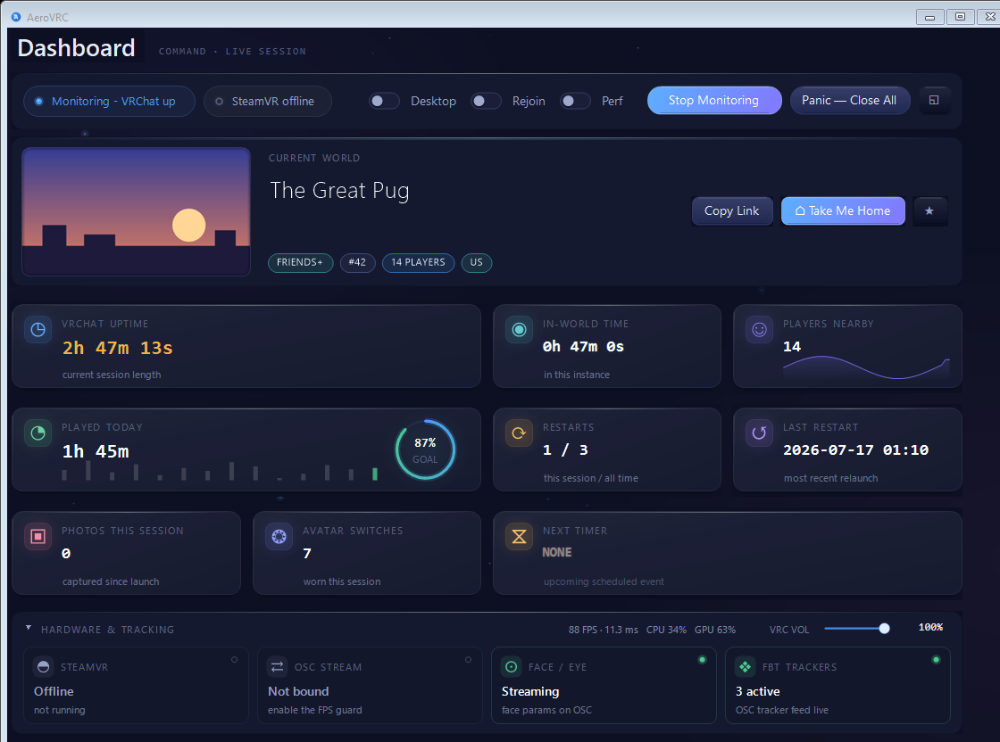
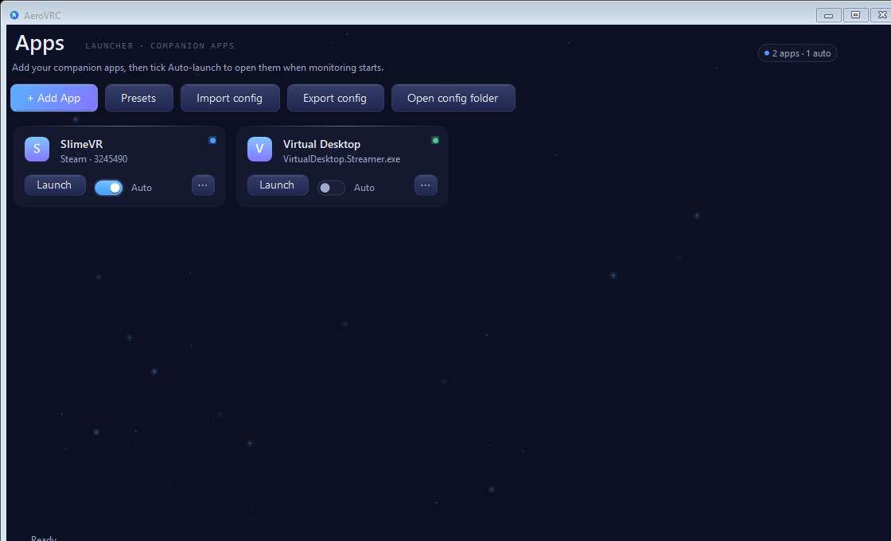
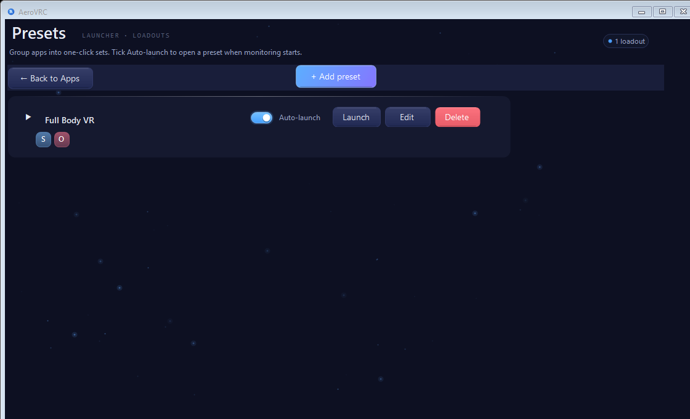
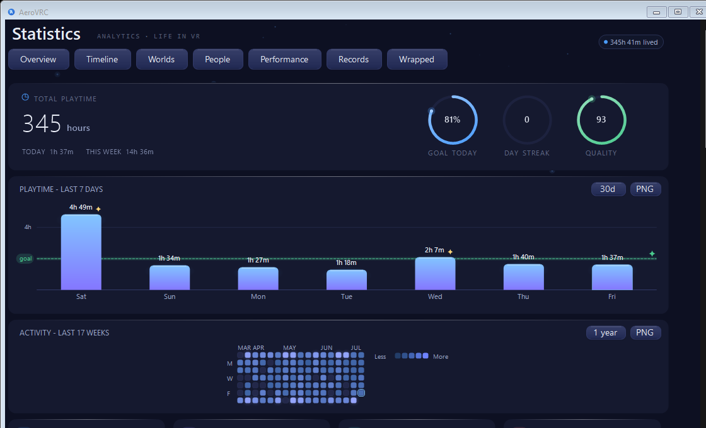
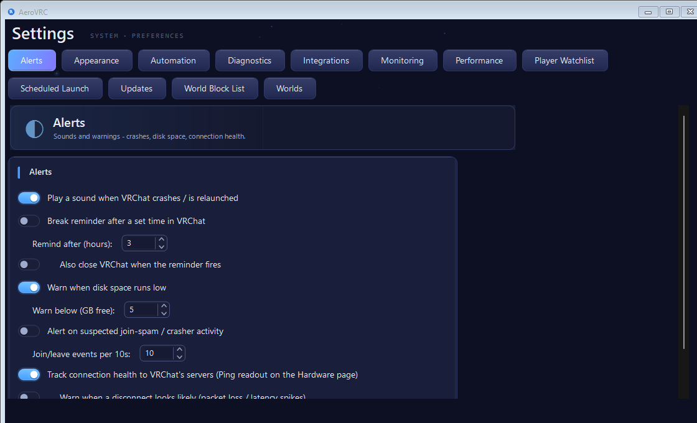
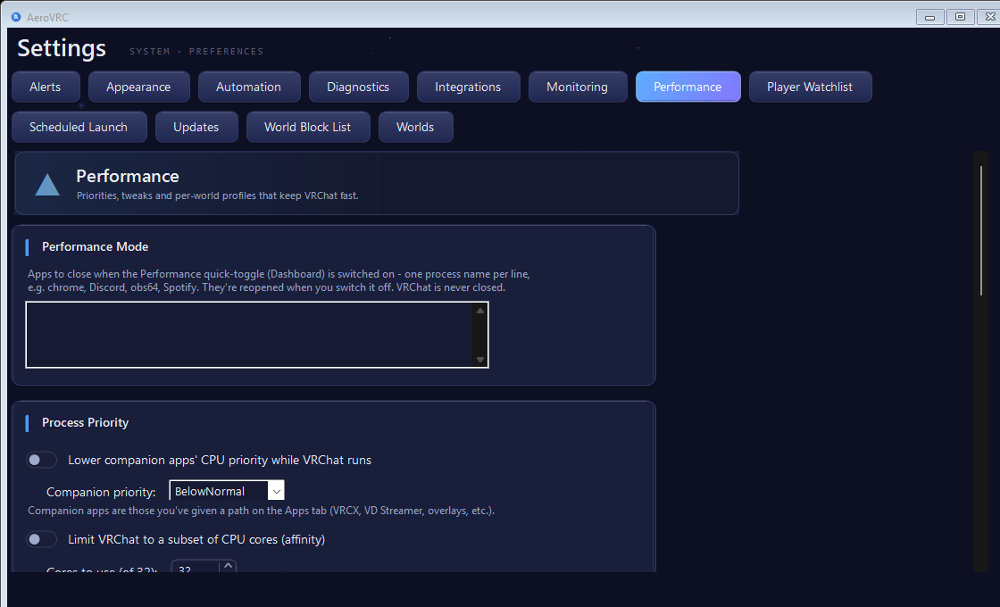

Real screens from the app — one hand-built dark theme across every page, tuned to sit right next to VRChat.

The dashboard. Current world and instance, live session stats, a rolling frame-time graph, hardware readouts and a live who’s-here roster — one screen, always up to date.

Apps. Add your OSC tools, trackers and utilities by .exe path or Steam App ID, then let AeroVRC open them the moment monitoring starts.

Presets. Group your apps into one-click sets — tick Auto-launch to open a whole preset the moment monitoring begins.

Statistics. Playtime charts, an activity heatmap, session lengths and restart counts — with daily and weekly goals, so you can watch the watchdog earn its keep.

Settings. Deep, friendly controls — crash and break alerts, automation, hardware monitoring, integrations, bedtime/sleep, watchlists and more.

Performance. One toggle frees up resources for VRChat by closing the apps you list — then reopens them afterwards — plus VRChat cache management.